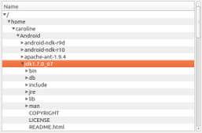

TreeView QML Type
Provides a tree view with scroll bars, styling and header sections. More...
| Import Statement: | import QtQuick.Controls 1.4 |
| Since: | Qt 5.5 |
| Inherits: |
Properties
- alternatingRowColors : bool
- backgroundVisible : bool
- columnCount : int
- contentFooter : Component
- contentHeader : Component
- currentIndex : QModelIndex
- headerDelegate : Component
- headerVisible : bool
- itemDelegate : Component
- model : QAbstractItemModel
- rootIndex : QModelIndex
- rowDelegate : Component
- section
- section.criteria : enumeration
- section.delegate : Component
- section.labelPositioning : enumeration
- section.property : string
- selection : ItemSelectionModel
- selectionMode : int
- sortIndicatorColumn : int
- sortIndicatorOrder : int
- sortIndicatorVisible : bool
Signals
- activated(index)
- clicked(index)
- collapsed(index)
- doubleClicked(index)
- expanded(index)
- pressAndHold(index)
Methods
- TableViewColumn addColumn(object column)
- void collapse(index)
- void expand(index)
- TableViewColumn getColumn(int index)
- QModelIndex indexAt( int x, int y)
- TableViewColumn insertColumn(int index, object column)
- bool isExpanded(index)
- void moveColumn(int from, int to)
- void removeColumn(int index)
- void resizeColumnsToContents()
Detailed Description

A TreeView implements a tree representation of items from a model.
Data for each row in the TreeView is provided by the model. TreeView accepts models derived from the QAbstractItemModel class.
You provide title and size of a column header by adding a TableViewColumn as demonstrated below.
TreeView {
TableViewColumn {
title: "Name"
role: "fileName"
width: 300
}
TableViewColumn {
title: "Permissions"
role: "filePermissions"
width: 100
}
model: fileSystemModel
}
The header sections are attached to values in the model by defining the model role they attach to. Each property in the model will then be shown in their corresponding column.
You can customize the look by overriding the itemDelegate, rowDelegate, or headerDelegate properties.
The view itself does not provide sorting. This has to be done on the model itself. However you can provide sorting on the model, and enable sort indicators on headers.
- int sortIndicatorColumn - The index of the current sort column
- bool sortIndicatorVisible - Whether the sort indicator should be enabled
- enum sortIndicatorOrder - Qt.AscendingOrder or Qt.DescendingOrder depending on state
You can create a custom appearance for a TreeView by assigning a TreeViewStyle.
Property Documentation
alternatingRowColors : bool |
This property is set to true if the view alternates the row color. The default value is true.
backgroundVisible : bool |
This property determines if the background should be filled or not.
The default value is true.
Note: The rowDelegate is not affected by this property
[read-only] columnCount : int |
The current number of columns
contentFooter : Component |
This is the content footer of the view.
contentHeader : Component |
This is the content header of the view.
headerDelegate : Component |
This property defines a delegate to draw a header.
In the header delegate you have access to the following special properties:
- styleData.value - the value or text for this item
- styleData.column - the index of the column
- styleData.pressed - true when the column is being pressed
- styleData.containsMouse - true when the column is under the mouse
- styleData.textAlignment - the horizontal text alignment of the column (since QtQuickControls 1.1)
headerVisible : bool |
This property determines if the header is visible. The default value is true.
itemDelegate : Component |
This property defines a delegate to draw a specific cell.
In the item delegate you have access to the following special properties:
- styleData.selected - if the item is currently selected
- styleData.value - the value or text for this item
- styleData.textColor - the default text color for an item
- styleData.row - the index of the view row
- styleData.column - the index of the view column
- styleData.elideMode - the elide mode of the column
- styleData.textAlignment - the horizontal text alignment of the column
- styleData.pressed - true when the item is pressed
- styleData.hasActiveFocus - true when the row has focus
- styleData.index - the QModelIndex of the current item in the model
- styleData.depth - the depth of the current item in the model
- styleData.isExpanded - true when the item is expanded
- styleData.hasChildren - true if the model index of the current item has or can have children
- styleData.hasSibling - true if the model index of the current item has a sibling
Example:
itemDelegate: Item {
Text {
anchors.verticalCenter: parent.verticalCenter
color: styleData.textColor
elide: styleData.elideMode
text: styleData.value
}
}
Note: For performance reasons, created delegates can be recycled across multiple table rows. This implies that when you make use of implicit properties such as styleData.row or model, these values can change after the delegate has been constructed. This means that you should not assume that content is fixed when Component.onCompleted is called, but instead rely on bindings to such properties.
This property holds the model providing data for the tree view.
The model provides the set of data that is displayed by the view. The TreeView accept models derived from the QAbstractItemModel class.
The model index of the root item in the tree view. The root item is the parent item to the view's top-level items. Only items descending from the root item will be visible in the view.
Its default value is an invalid QModelIndex, which means the whole model data is shown by the tree view (assigning undefined to this proprety resets it to its default value.)
This property was introduced in QtQuick.Controls 1.5.
rowDelegate : Component |
This property defines a delegate to draw a row.
In the row delegate you have access to the following special properties:
- styleData.alternate - true when the row uses the alternate background color
- styleData.selected - true when the row is currently selected
- styleData.row - the index of the row
- styleData.hasActiveFocus - true when the row has focus (since QtQuick.Controls 1.3)
- styleData.pressed - true when the row is pressed (since QtQuick.Controls 1.3)
Note: For performance reasons, created delegates can be recycled across multiple table rows. This implies that when you make use of implicit properties such as styleData.row or model, these values can change after the delegate has been constructed. This means that you should not assume that content is fixed when Component.onCompleted is called, but instead rely on bindings to such properties.
section.criteria : enumeration |
section.delegate : Component |
section.labelPositioning : enumeration |
section.property : string |
These properties determine the section labels.
See also ListView.section.
By default the selection model is null and only single selection is supported.
To use a different selection mode as described in selectionMode, an ItemSelectionModel must by set to the selection.
For example:
TreeView {
model: myModel
selection: ItemSelectionModel {
model: myModel
}
TableViewColumn {
role: "name"
title: "Name
}
}
See also selectionMode.
selectionMode : int |
This enum indicates how the view responds to user selections:
The possible modes are:
- SelectionMode.NoSelection - Items cannot be selected.
- SelectionMode.SingleSelection - When the user selects an item, any already-selected item becomes unselected, and the user cannot unselect the selected item. (Default)
- SelectionMode.MultiSelection - When the user selects an item in the usual way, the selection status of that item is toggled and the other items are left alone.
- SelectionMode.ExtendedSelection - When the user selects an item in the usual way, the selection is cleared and the new item selected. However, if the user presses the Ctrl key when clicking on an item, the clicked item gets toggled and all other items are left untouched. If the user presses the Shift key while clicking on an item, all items between the current item and the clicked item are selected or unselected, depending on the state of the clicked item. Multiple items can be selected by dragging the mouse over them.
- SelectionMode.ContiguousSelection - When the user selects an item in the usual way, the selection is cleared and the new item selected. However, if the user presses the Shift key while clicking on an item, all items between the current item and the clicked item are selected.
This property was introduced in QtQuick.Controls 1.1.
sortIndicatorColumn : int |
Index of the current sort column. The default value is 0.
sortIndicatorOrder : int |
This sets the sorting order of the sort indicator The allowed values are:
- Qt.AscendingOrder - the default
- Qt.DescendingOrder
sortIndicatorVisible : bool |
This property shows or hides the sort indicator The default value is false.
Note: The view itself does not sort the data.
Signal Documentation
Emitted when the user activates a row in the tree by mouse or keyboard interaction. Mouse activation is triggered by single- or double-clicking, depending on the platform.
index is the model index of the activated row in the tree.
Note: This signal is only emitted for mouse interaction that is not blocked in the row or item delegate.
The corresponding handler is onActivated.
Note: The corresponding handler is onActivated.
Emitted when the user clicks a valid row in the tree by single clicking
index is the model index of the clicked row in the tree.
Note: This signal is only emitted if the row or item delegate does not accept mouse events.
The corresponding handler is onClicked.
Note: The corresponding handler is onClicked.
Emitted when a valid row in the tree is collapsed, hiding its children.
index is the model index of the collapsed row in the tree.
Note: This signal is only emitted if the row or item delegate does not accept mouse events.
The corresponding handler is onCollapsed.
Note: The corresponding handler is onCollapsed.
Emitted when the user double clicks a valid row.
index is the model index of the double clicked row in the tree.
Note: This signal is only emitted if the row or item delegate does not accept mouse events.
The corresponding handler is onDoubleClicked.
Note: The corresponding handler is onDoubleClicked.
Emitted when a valid row in the tree is expanded, displaying its children.
index is the model index of the expanded row in the tree.
Note: This signal is only emitted if the row or item delegate does not accept mouse events.
The corresponding handler is onExpanded.
Note: The corresponding handler is onExpanded.
Emitted when the user presses and holds a valid row in the tree.
index is the model index of the pressed row in the tree.
Note: This signal is only emitted if the row or item delegate does not accept mouse events.
The corresponding handler is onPressAndHold.
Note: The corresponding handler is onPressAndHold.
Method Documentation
TableViewColumn addColumn(object column) |
Adds a column and returns the added column.
The column argument can be an instance of TableViewColumn, or a Component. The component has to contain a TableViewColumn. Otherwise null is returned.
Collapses the model item specified by the index.
See also collapsed and isExpanded.
Expands the model item specified by the index.
See also expanded and isExpanded.
TableViewColumn getColumn(int index) |
Returns the column at the given index or null if the index is invalid.
QModelIndex indexAt( int x, int y) |
Returns the model index of the visible row at the point x, y in content coordinates. If there is no visible row at the point specified, an invalid QModelIndex is returned.
Note: This method should only be called after the component has completed.
TableViewColumn insertColumn(int index, object column) |
Inserts a column at the given index and returns the inserted column.
The column argument can be an instance of TableViewColumn, or a Component. The component has to contain a TableViewColumn. Otherwise null is returned.
bool isExpanded(index) |
void removeColumn(int index) |
Removes and destroys a column at the given index.
Resizes all columns to ensure that the column contents and the headers will fit.
This method was introduced in QtQuick.Controls 1.2.